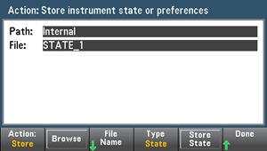
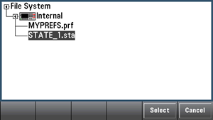
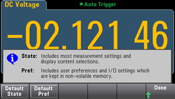

The Utility menu is shown below.
Press Store/Recall to save and recall state and preference files. In general, state files store volatile settings associated with measurements. Preferences are non-volatile parameters associated with the instrument, but not any specific measurement. For details, see the table in the MMEMory State and Preferences Subsystem.
Store Settings allows you to browse to a directory and specify a file name, and to choose whether you want to store a state file or a preference file.

Press Type to select whether you want to store a state or preferences file, and press Store State (shown above) or Store Pref (the softkey's label if you are storing preferences) to store the specified file.
Action allows you to either store a file or to create a new folder.
Recall Settings allows you to browse to the file to be recalled. Use the arrow keys to navigate to the desired state file (*.sta) or preferences file (*.prf).

Power On selects the state that is loaded at power-up. This can be either the state when the instrument was powered down with the power switch (Last), a user-selected state file (User Defined), or the factory default state (Factory Defaults).
Set to Defaults loads the instrument's factory default state or preference settings.
